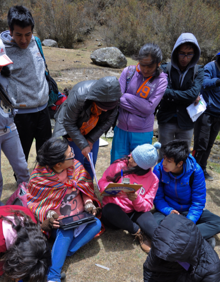

En la cima del mundo, en los Andes del Perú, los efectos del cambio climático en la calidad de agua se está evidenciando progresivamente. Con el retroceso de los glaciares andinos, las rocas expuestas entran en contacto directo con el agua, lo que causa la movilización de altos niveles de minerales y metales pesados hacia arroyos y ríos. El agua ácida y contaminada es nociva para la biodiversidad y aún más para el ser humano. Este escenario se complica por las actividades agrícolas locales, los desagües que van directamente a los ríos, y otros tipos de contaminación antropogénica. Por ello, el monitoreo de calidad de agua en las montañas es importante, pero los métodos convencionales (fisicoquímicos) son caros y de difícil acceso.
Nathan Hecht, un voluntario de Cuerpo de Paz en su tercer año en Perú, está trabajando en una estrategia frente a este problema, gracias a la cooperación entre el Instituto de Montaña y USAID en el proyecto Asegurando el Agua y los Medios de Vida en las Montañas. La respuesta al problema se esta desarrollando con el soporte de celulares.
“Una manera de pensar en la calidad de agua es a partir de la salud de los ecosistemas. Por eso, estamos usando macroinvertebrados (insectos y artrópodos acuáticos en la base de la cadena alimenticia) como bio-indicadores de calidad de agua. Hemos desarrollado un App para celulares que facilita el uso de los macroinvertebrados para determinar la calidad del agua.”
La base del App de calidad de agua, o “Calculadora de ABI” es el Índice Biótico Andino (ABI), un índice adaptado a los Andes que asigna un puntaje a cada familia de macroinvertebrados según su sensibilidad a la contaminación. “Eso nos da una medida para cuantificar la salud de los ecosistemas acuáticos de montaña,” dice Hecht.
El concepto de desarrollar esta herramienta nació de colaboración entre el Instituto de Montaña y Laura Read del Programa CAMBIAR, de Ingenieros Sin Fronteras. El uso del índice biótico fue posible gracias al colaboración del Dr. Raúl Loayza del laboratorio de Ecotoxicología en la Universidad Peruana Cayetano Heredia en Lima, quien ha investigado el índice en los Andes los últimos 10 años. El mismo App fue diseñado y codificado por Kevin Smith, un candidato doctoral de la Universidad de Tufts en los Estados Unidos.
“El App ya cuenta con un centro de aplicación en la Universidad Nacional “Santiago Antúnez de Mayolo” en Huaraz, Ancash. Dos cursos usarán el App durante la parte práctica, en colaboración con varias organizaciones de base comunitaria, para evaluar la calidad de agua en arroyos y lagunas de montaña, que son de interés de las comunidades locales.”
“La tecnología no sólo nos permite crear herramientas que nos ayudan a manejar y cuidar los recursos naturales de los que dependemos todos, sino también a contar con la colaboración nacional e internacional para hacerlas efectivas.”
(Arriba) Nathan Hecht, un miembo de Cuerpo de Paz trabajando con el Instituto de Montaña, presentando resultados de calidad de agua al Sr. José Aurelio, representante de la Comunidad Campesina Cauhide.
(Abajo) Jóvenes universitarios utilizan una tablet con el App “Calculadora de ABI” para determinar la calidad de agua usando macroinvertebrados como bioindicadores.
